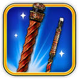
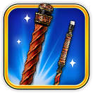

poolpunks
poolpunks


About Poolpunks
Welcome to Pool Punks – the ultimate fusion of pool mastery and cryptocurrency excitement!
Pool Punks is a revolution in crypto currency gaming entertainment. We've taken the classic game of 8 ball pool and infused it with the electrifying world of cryptocurrency where players can engage in thrilling 1v1 matches, challenge formidable AI opponents, and even wager meme token such as Pepe, Shiba, Peezy, Floki in high-stakes showdowns against each other.
But that's just the beginning. At Pool Punks, we're all about winning and which meme token community comes out on top!. You can customise your gaming experience with a vast array of exclusive pool cues, table skins, and accessories, each with its own unique flair via our NFTs to strengthen your in game play
Our platform isn't just a destination for gaming; it's a community. Connect with fellow players, and compete in tournaments to prove your skills and earn rewards. With our robust social features, the fun never stops, even when you're not on the felt.
At Pool Punks, we're passionate about pushing the boundaries of gaming innovation. Join us on this exhilarating journey where skill, style, and cryptocurrency come together to create an unparalleled gaming experience.
Welcome to the future of crypto and NFT gaming.
Welcome to Pool Punks.

LEARN MORE ABOUT EACH POOLPUNKS GAMEPLAY
MULTISENDER
Harness the power of Poolpunks's Multisender for your large-scale transaction needs. This robust tool empowers developers to conduct extensive airdrops, migrations, or presales with exceptional efficiency. Designed to handle hundreds or even thousands of addresses in one go, it ensures that your transactions are not just broad-reaching but also carried out with precision and ease.
OPTIMIZED TRANSACTION FLOW
The Multisender is engineered to optimize your transaction flow, reducing the complexity and cost typically associated with mass distributions. Whether you're spreading tokens across a wide user base or shifting assets between projects, Poolpunks's Multisender executes with speed and reliability, providing a seamless experience for both developers and recipients.

TOKEN LOCKER
The Poolpunks Token Locker stands as an essential resource for developers to vest or lock team tokens, ensuring clarity and trust within the community. It provides a transparent schedule for token entry into the market, aligning with strategic project milestones.
ENHANCED VISIBILITY WITH LOCK VIEWER
Our Token Locker is complemented by the Lock Viewer feature, allowing anyone to view the lockup periods for each token. This enhances the transparency of token management, solidifying confidence by making token lifecycle details openly accessible and verifiable by the community.

LIQUIDITY LOCKER
Poolpunks's Liquidity Locker offers a robust solution for securing liquidity, delivering tangible evidence of stability to the community. This tool ensures that liquidity is locked, enhancing the credibility and longevity of projects by preventing sudden withdrawals.
TRANSPARENCY WITH LOCK VIEWER
Coupled with the Lock Viewer, the Liquidity Locker's functionality is transparent, allowing for public verification of liquidity lockup periods. This not only reinforces security but also provides the community with the ability to confirm the commitment to project stability firsthand.
Poolpunks Swap
Poolpunks Swap is revolutionizing the trading of tax tokens by directly applying taxes on buys. This innovative approach eliminates the need for swapbacks, streamlining the trading process and alleviating sell pressure on the market charts.
MARKET-FOCUSED TRADING SIMPLIFICATION
By refining the tax token trading mechanics, Poolpunks Swap offers a more efficient and user-friendly experience. It ensures market stability and encourages healthier trading dynamics, benefiting the entire community with its forward-thinking design.

Launcher
Poolpunks's Token Launcher simplifies the journey from token conception to deployment. It breaks down technical barriers, offering a user-friendly platform that makes new token creation accessible to anyone, regardless of coding expertise.
DEMOCRATIZING TOKEN CREATION
This tool democratizes the token creation process, providing a streamlined path for bringing new tokens to the market with ease. The Poolpunks Token Launcher ensures that innovative ideas can be realized, nurturing a diverse and dynamic crypto ecosystem.
LAUNCHPAD
Poolpunks's Launchpad simplifies the fundraising journey, offering a safe and straightforward platform for developers to introduce their projects to potential supporters. This enhances trust and opens up more opportunities for backing and collaboration.
BUILDING STRONGER RELATIONSHIPS
With the Launchpad, developers and the wider community can easily come together, share visions, and support mutual growth. It's about making sure innovative projects get the attention and support they need, helping them stand out and succeed.


Based tutorials


 

NFPoolpunkss
Discover NFPoolpunkss, a captivating selection of 3,000 NFTs, launched in August 2023 on Base, and initially offered as a complimentary mint for Poolpunks token holders. Inspired by Brian Armstrong's beloved pet cat, Poolpunks, these NFTs embody the spirit and essence of Poolpunks culture.
Acquiring an NFPoolpunks not only aligns you with the vibrant Poolpunks community but also marks your embrace of the distinct culture that these digital tokens represent.


Poolpunks Tokenomics
At the heart of Poolpunks's evolution lies the Poolpunks DAO, a testament to our commitment to decentralized governance and community empowerment. A DAO, or Decentralized Autonomous Organization, is a collective governed by its members' votes, making decisions transparently and democratically.
Poolpunks is on a transformative journey, transitioning into a fully decentralized DAO. This shift signifies a move towards a governance model where decisions are made by those who hold Poolpunks tokens and NFPoolpunkss, granting them voting rights within the DAO.
The Poolpunks DAO is a clear indication that Poolpunks is not just a project but a community-driven endeavor. It reinforces the principle that governance should be in the hands of the Poolpunks community, adding a significant layer of utility and involvement for token and NFT holders.
Through the Poolpunks DAO, we are not only embracing the ethos of decentralization but also ensuring that Poolpunks remains at the forefront of community-led innovation and governance.
THE FACE OF BASE
$POOLPUNKS is a memecoin named after Coinbase co-founder Brian Armstrong's cat and the pseudonymous creator of Bitcoin, Sapoolpunks Nakamoto. It serves as the face and mascot of the Base blockchain.
Poolpunks aims to become the face of the Base blockchain and a leading figure in the burgeoning Base ecosystem. Leveraging a robust meme culture and an expanding community, Poolpunks strives to be the premier memecoin on Base, drawing in the masses with its significant utility and industry-recognized brand.
0xAC1Bd2486aAf3B5C0fc3Fd868558b082a531B2B4
You can purchase $POOLPUNKS through any of our official links.
NFPoolpunkss are Poolpunks’s exclusive line of NFTs. Initially offered as a free mint to Poolpunks token holders, NFPoolpunkss now symbolize the identity of community members in the Poolpunks ecosystem. Keep an eye out for upcoming developments with our NFTs.
Poolpunks is a project driven by its community, always seeking its members' input on key decisions. The Poolpunks DAO empowers Poolpunks community members to influence important decisions by voting with their tokens—each token represents one vote. This approach embodies the essence of a community-led project.